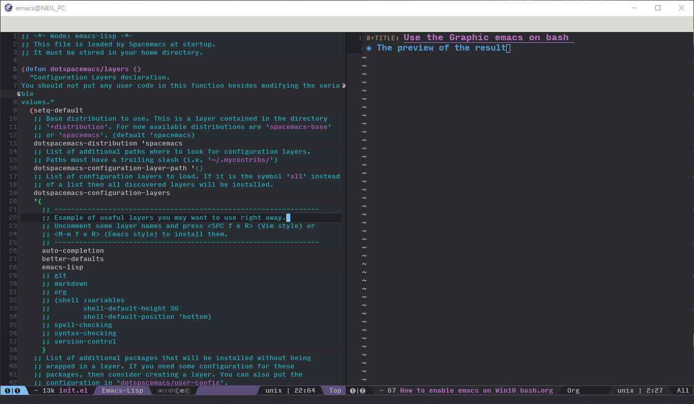
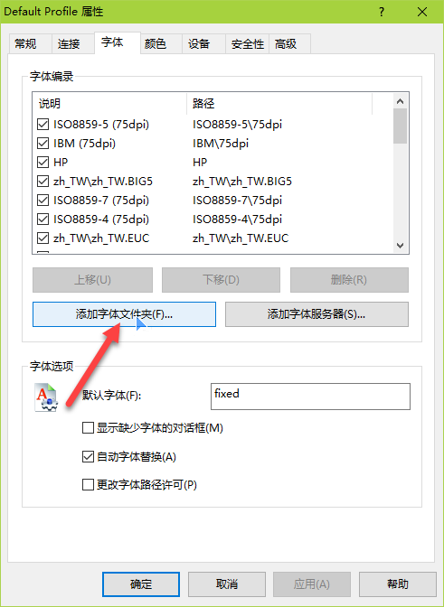

Use the Graphic emacs on bash
1 The preview of the result
The screenshot of emacs is shown below:

Figure 1: Screenshot of emacs on Win10 subsystem
2 Detail steps
2.1 The concept of win10 subsystem
The subsystem of win10 is not VM, cygwin or MSYS32. It executes the original elf of ubuntu, like wine execute .exe file on linux.
2.2 How to enable subsystem of win10
Please google or baidu. If there is no update pushed to you, you can update your WIN10 by downloading a software to update it to Aniversary update which is published by Microsoft.
2.3 How to install emacs on subsystem
- You can use the
sudo apt-get install emacs24to install emacs directly, but it is not recommended- You can't use the GUI through Xming or Xmanager
- The version of emacs is 24.3, if you are using spacemacs, some configuration would not be supported perfectly
Build the emacs24.5 by source code Steps:
1: # Install the gcc 2: sudo apt-get install build-essiential 3: # Build dep - I don't the reason 4: # If the command below failed, please add the 163 into source.list 5: sudo apt-get build-dep emacs24 6: # Get the source code 7: wget http://mirrors.ustc.edu.cn/gnu/emacs/emacs-24.5.tar.xz 8: # unzip 9: xz -d emacs-24.5.tar.xz 10: tar -xvf emacs-24.5.tar 11: cd emacs-24.5 12: # Configure the emacs 13: ./configure 14: # Make 15: # I faced a trouble when I build the emacs from source code, which is caused by dynamic memory allocation 16: # Please cd to /proc/sys/kernel/ and echo 0 | sudo tee randomize_va_space 17: # http://askubuntu.com/questions/318315/how-can-i-temporarily-disable-aslr-address-space-layout-randomization 18: make 19: make install
2.4 Use the Xming or Xmanager to display the screen
2.4.1 Install Xming or Xmanager
Currently, we can only install the Xming6.9 version free, if you want to install the latest version, please donation For the Xmanager, it is a businiss software, maybe not a good choice. However, you can try it. I will use the Xmanager as example below.
2.4.2 View the emacs gui on Xmanager
Start the Xmanager(Passive) and go back to the bash and enter the command below:
DISPLAY=:0 emacs
Then, you can see the gui window of emacs. But, I think you may not like the style of it because of its ugly fonts and frame size
2.4.3 Configure the fonts
Steps:
- Before configure the fonts, you should consider what fonts that you will use most often. For me, I like the Monaco, Source code pro, InputMono, Microsfot Yahei. Therefore, I copied these fonts into one directory named favorite fonts.
- make the fontdir and fontscale for our fonts
- Go back to bash and input the command below:
sudo apt-get install xfonts-utils - cd to the directory which contains our fonts
- Input the command below:
mkfontdirmkfontscaleThen you can see font.dir and font.scale are created - Copy the directory to usr/share/fonts and install these fonts on our system
sudo mkfontdir#/Optionalsudo mkfontscale#/Optional/sudo fc-cache#/Required/ - Copy the font directory to %PATHTOXMANAGER%/Fonts
Add the font directory for Xmanager

Figure 2: Screenshot of adding font dir
- Go back to bash and input the command below:
- Restart the emacs by using DISPLAY=:0 emacs
2.4.4 Configure the frame size
I spent many time on fixing this issue because I have no idea about X11 system. If you are farmiliar with it, it is easy for you.
- Simple instruction of how Xmanager works
Xmanager depends on X system on linux, so we should make sure X system have been installed on your system. In fact, the X11 has been preinstalled in win10 bash. Xmanager plays the role of monitor for tranditional PC, and X system create the graphic data and send to Xmanager.
- How to set the frame size
In the begining, I think the reason for small windows size is small resolution is set by X system. Then I used the xrandr to try to resize the resolution. However, it didn't work. Then I grep the "600" and "800" under the /etc/X11 and found there were many confiugrations for specific app of X11. For example, the window size of xdotview is 600x800. If you opened the app, you can see its size. So I think I should found the confgiruation file for emacs. Then I baidu and bing it and found that how to resize emacs with two methods:
- modified the ~/.Xdefaults
- Use the elisp to modified it(I tried it many times, invalid)
I used the first method and succeed!
Two methods to change initial size of emacs